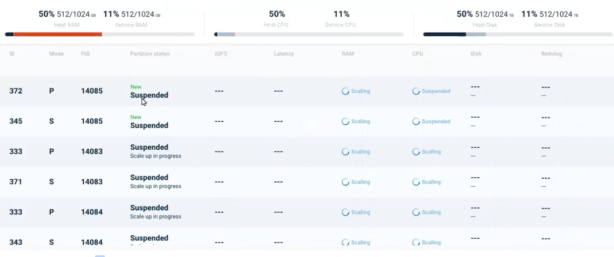

On Demand Scale Out/In is at Beta feature level. It will be available as a fully supported feature in the next release.
Horizontal scaling, referred to as On Demand Scale Out/In, means to increase or reduce the number of partitions allocated to a service.
Big data is often stored in geographically dispersed nodes, which includes partitioning of databases.
If the application involves few cross-partition joins, it may be appropriate for On Demand Scale Out/In.
NoSQL databases often use On Demand Scale Out/In.
On Demand Scale Out/In will cause a temporary quiesce of the affected partitions. It is recommended to perform the scaling operation during an off-peak period.
On Demand Scale Out/In is available for a partitioned cluster schema with a high availability cluster.
To enable Scale Out, the service must be deployed with the following property:
--property pu.dynamic-partitioning=true
Capacity planning should include the RAM resources to accommodate the additional partitions during the Scaling Out process.
ElasticGrid and ServiceGrid orchestration methods are supported.
in ServiceGrid, the GSC's must be initially spawned by the user before performing a Scale Out operation.
On Demand Scale Out/In can be performed using the Ops Manager user interface, the Command Line Interface (CLI), and programmatically using REST-API.
The terminology for scaling is relative: If there are three partitions using a service, scaling to to five partitions is a Scale Out , while scaling to two partitions is a Scale In.
Click on the service card of the desired service in Ops Manager. The Service Details screen will display:

Note the ellipsis menu (three vertical dots). Click on the option On Demand Scale Out/In. Depending on the method of orchestration you are using, the next screen will appear as follows:
ServiceGrid:
In the example above, there are currently 16 partitions alocated for the service. You can choose one of the suggested numbers of partitions, or press Custom to choose any number of partitions. Note that the new partitions will all have the same allocation of RAM and CPU as the existing partitions.
Kubernetes

In the example above, there are currently 16 partitions using the service. You can choose one of the suggested numbers of partitions, or press Custom to choose any number of partitions.
Note that by default the suggested RAM (8M) and CPU (200Mib) for the new partitions is based on the most frequent allocation for the existing partitions. Click on > CPU or > RAM to override these suggested values for the new partitions.
After entering the desired values and pressing Apply, the system will display a confirmation screen:

Press Scale Now to begin the scaling process.
As the scaling is underway, a progress message will display in the screen banner:

Note that while the scaling is in progress, the status of the individual affected services will display in the Service Details screen:

Scale Out (Add) or Scale-In (Remove) Partitions
Command (ServiceGrid):
pu scale-horizontal <pu-name> <num-partitions>
or pu scale-h <pu-name> <partitions>
Command (ElasticGrid):
pu scale-horizontal <pu-name> <num-partitions> <memory> <cpu>
orpu scale-h <pu-name> <partitions> <memory> <cpu>
Description:
The Space is rescaled to the desired number of partitions.
For ElasticGrid, the memory and CPU allocations for new partitions may be specified, otherwise the default values for the service are used.
Input Example:
pu scale-horizontal myPu 4
Output Example:
REQUEST DETAILS
ID 6
Description Scale out pu (mySpace) partitions by 2
Status running
Status Url http://127.0.1.1:8090/v2/pus/mySpace/instances
Submitted By anonymous
Submitted From 127.0.0.1
Submitted At 2020-05-20 16:32:01
Parameters and Options:
| Parameter | Description |
|---|---|
| space-name | Name of the Space to rescale |
| partitions | Number of partitions for the Space |
| memory | Memory allocated for the Space (ElasticGrid only) |
| cpu | CPU allocated for the Space (ElasticGrid only) |
Request Status of a On Demand Scale Out/In Request
Command:
pu request status <request-id>
Description:
The status of the scaling request is displayed.
Input Example:
pu request-status 6
Output Example:
REQUEST DETAILS
ID 6
Description Scale out pu (mySpace) partitions by 2
Status successful
Status Url http://127.0.1.1:8090/v2/pus/mySpace/instances
Submitted By anonymous
Submitted From 127.0.0.1
Submitted At 2020-05-20 16:32:01
Completed at 2020-05-20 16:32:31
Parameters and Options:
| Parameter | Description |
|---|---|
| request-id | ID of the scaling request |
ServiceGrid:
curl -X POST --header 'Content-Type: application/json'
--header 'Accept: text/plain'
'https://172.17.0.4:8090/v2/pus/myProcessingUnit/scale-h?target=4'
Elasticgrid:
curl -X POST --header 'Content-Type: application/json'
--header 'Accept: text/plain'
'https://172.17.0.4:8090/v2/pus/myProcessingUnit/scale-h?target=4&memory=55&cpu=400'
During a Scale Out operation, the first read/write operation will trigger a Java exception, which can be handled as follows. The example is for a writeMultiple operation.
try {
gigaSpace.writeMultiple(entries);
}
catch (WriteMultipleException e) {
gigaSpace.writeMultiple(entries);
}
Subsequent read/write operations will not raise this exception.
The following features are not currently supported for On Demand Scale Out/In: